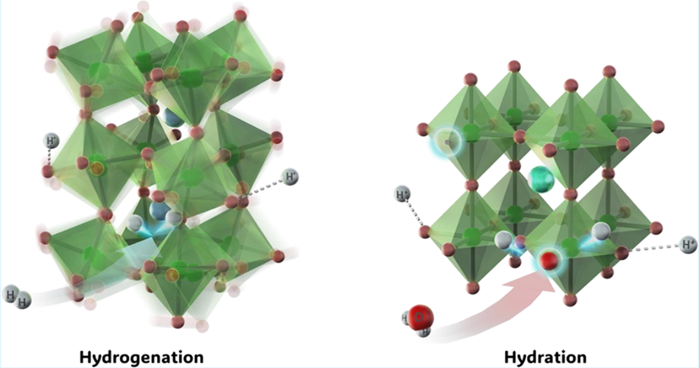
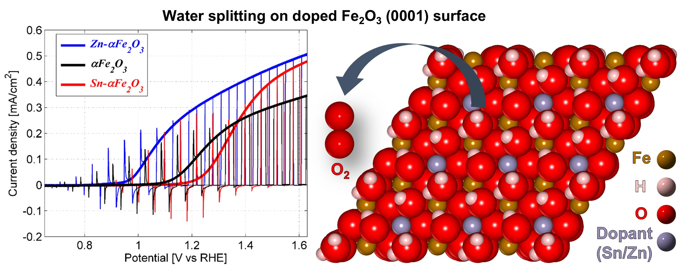
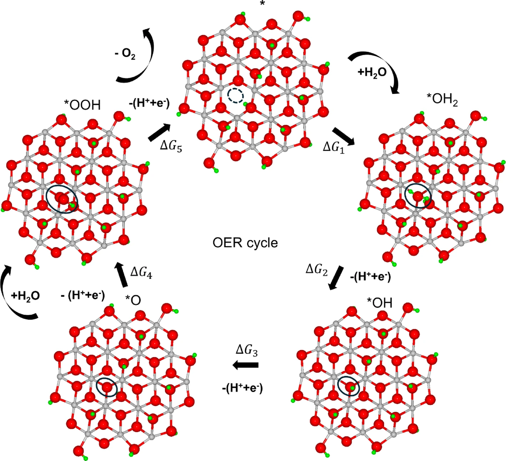
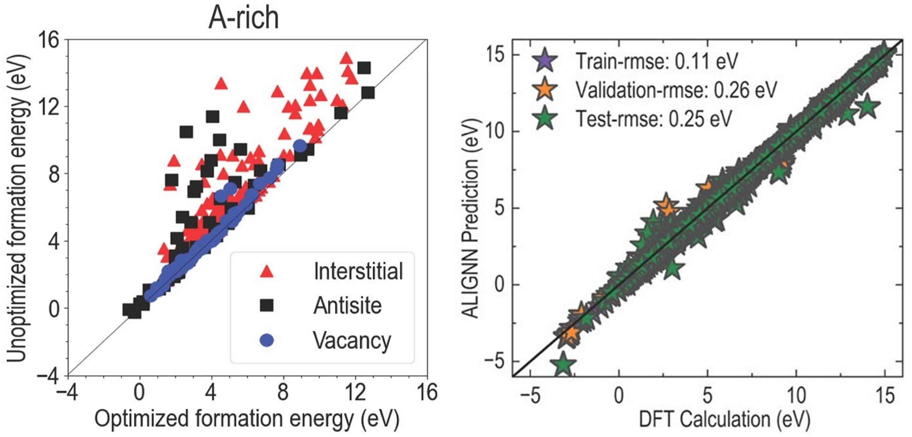
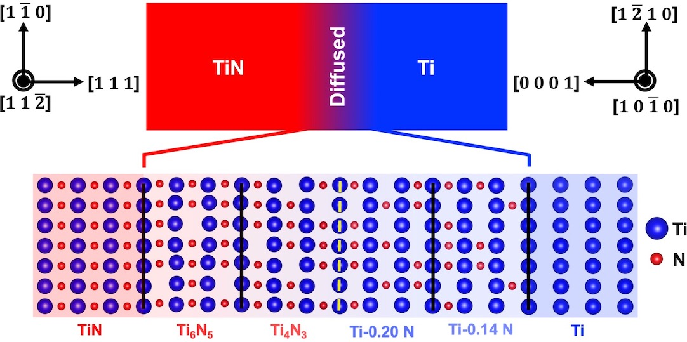
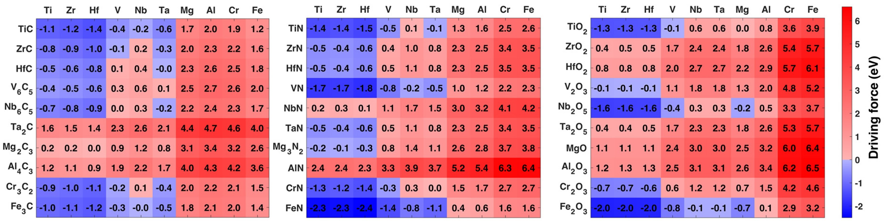
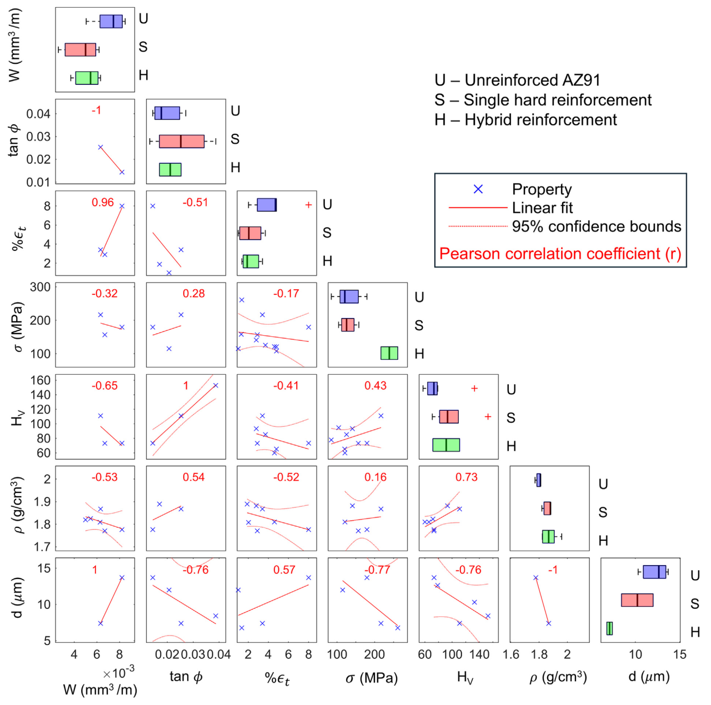
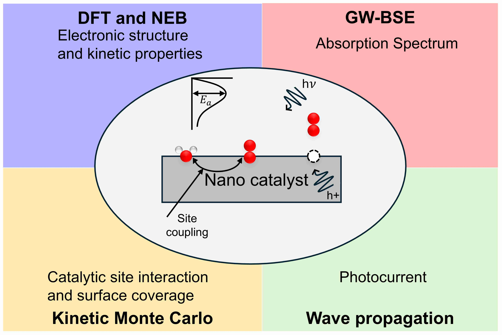
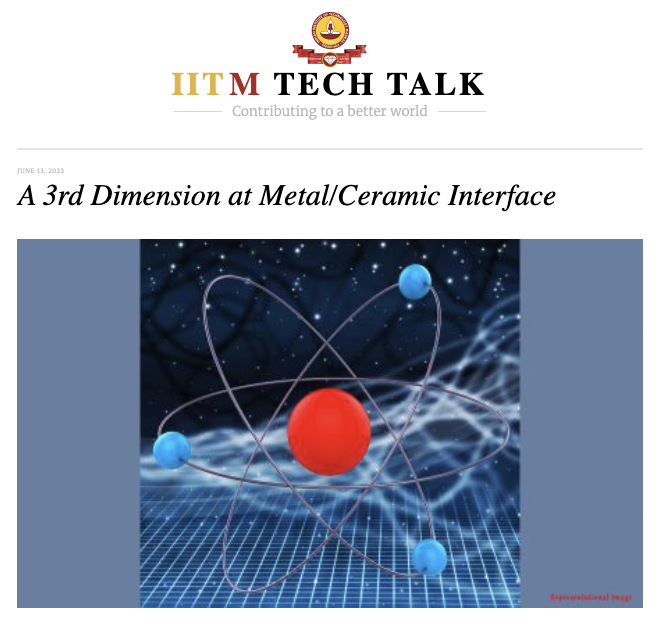
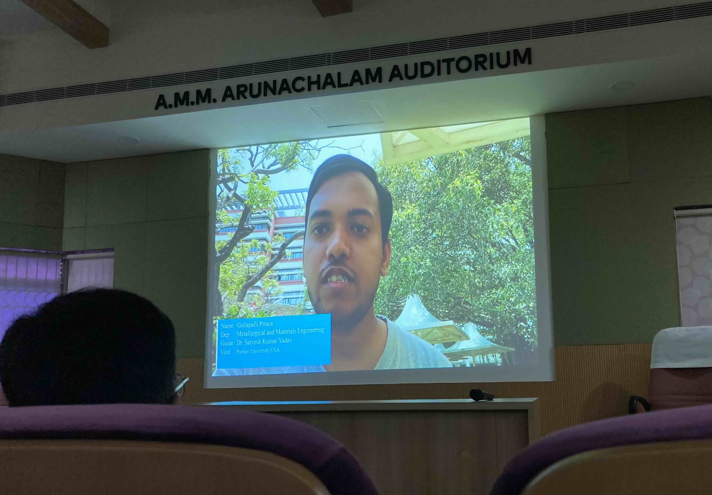

Our research focuses on fundamental understanding of the behaviour of materials in presence of defects, such as 0-D (vacancies, interstitials), 2-D (surfaces, interfaces), 3-D (nanoparticles). A major hurdle in developing next generation materials lies in understading the structure-property correlation at a fundamental level. More often than not, several types of defects coexist in materials used current and future technologies. We leverage computation to isolate all other effects to predict properties such as mechanical, cataltyic, and electronic.
Much of our predictions are centered on first-principles calculations based on density functional theory (DFT). We leverage graph neural networks trained from DFT data to predict properties in large systems. We also collaborate with experimental groups to design materials for current and next generation technologies. Current research interests include:

Combined DFT modeling and Synchrotron studies to understand reaction energetics.
ACS App. En. Mat, 2026.

Modeling water splitting on Fe2O3 surface: Anodic reaction during green hydrogen production.
J. Catalysis, 2026.

Thermodynamics and charge dynamics of water splitting reaction on NiOOH nanoparticle.
Discover Electrochem., 2026.

Machine learning for defect prediction in semiconductors.
APL Machine Learning, 2024.

Atomically chemically graded Ti-TiN interface (3-D as predicted by first-principles modeling) is thermodynamically stable over a sharp (2-D) interface
App. Surf. Sci., 2022.

Predicted interface nature (blue squares representing atomically chemically graded interface and red squares atomically sharp) in 300 metal/ceramic systems
Com. Mat. Sci., 2023

Microstructural, mechanical, damping, wear properties.
J. Mag. and Alloys, 2025.

Theoretical methods to understand water splitting mechanism
Nanophotonics, 2025.

June 13, 2023
IIT Madras Tech talk, "A 3rd dimension at Metal/Ceramic Interface" [Link] [PDF]

2022
Awarded by IIT Madras to purse part of research at Purdue University, US.